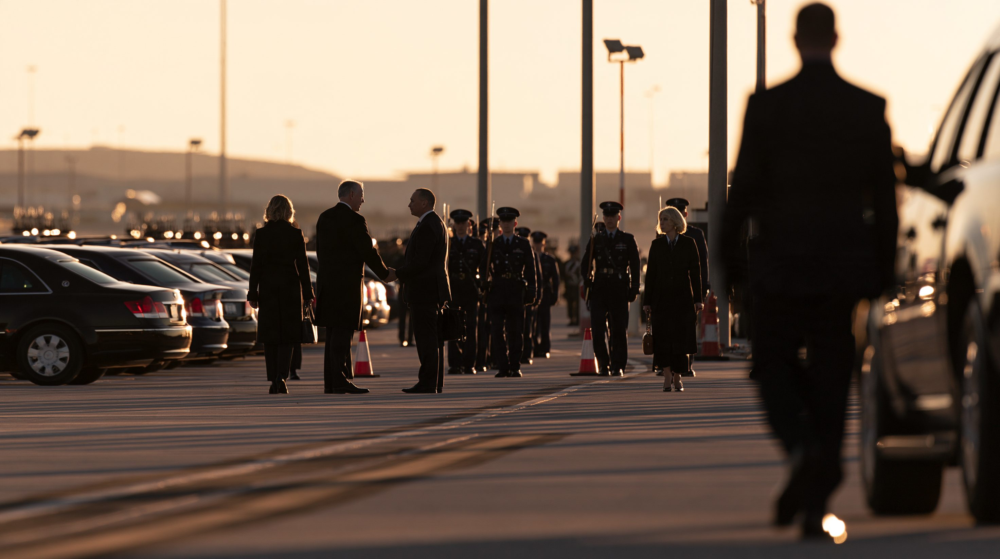
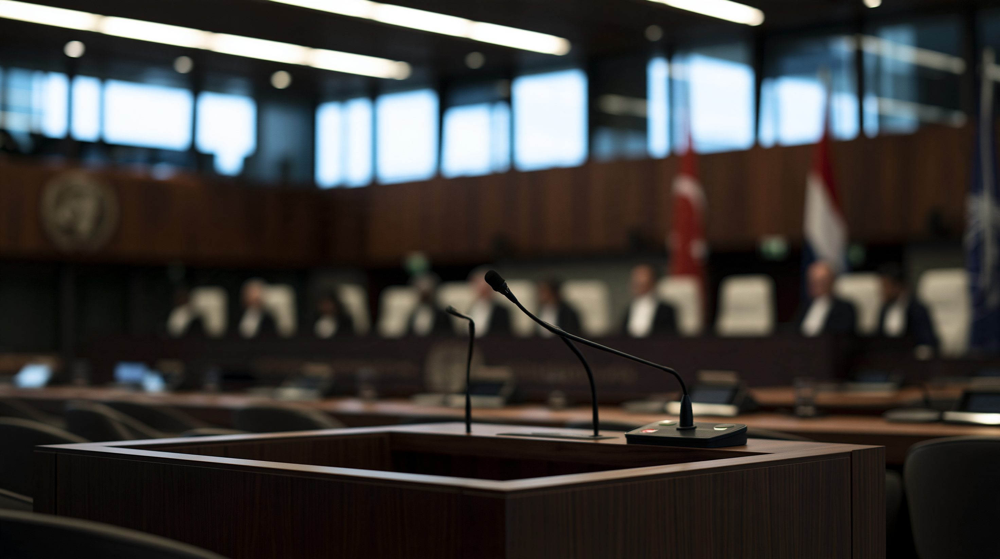
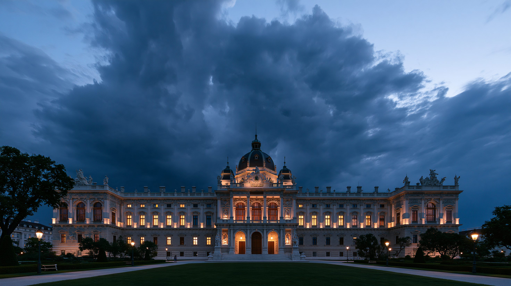

FILE 01論点
2023年3月、国際刑事裁判所（ICC）はウラジーミル・プーチン大統領に逮捕状を発付した。2024年11月には、ベンヤミン・ネタニヤフ首相にも。だがその後、両氏は逮捕状の効力が及ぶはずの加盟国を訪問しながら、一度も拘束されていない。
ICCは常設の国際刑事法廷として2002年に設立され、ローマ規程に基づき125か国が締約国として加盟する。だがICC自身は警察組織を持たず、逮捕を実行する権限がない。逮捕状の執行は各締約国の国内当局に委ねられており、法の効力が現実の拘束に変わるかどうかは、各国政府の政治判断にかかっている。
FILE 02タイムライン
ウクライナからロシアへの子どもの不法移送に関与した戦争犯罪容疑で、プーチン大統領と大統領府子どもの権利委員に逮捕状が発付された。ロシアは非締約国であり、ICCの管轄権自体を認めていない。
逮捕状発付後、初めてICC締約国を訪れた。モンゴルは儀仗兵を伴う歓迎式典で迎え、拘束は行われなかった。
裁判部はモンゴルが協力義務を果たさなかったと認定し、締約国会議に付託した。ウクライナは「ICCと国際刑事司法制度への重い打撃」と非難した。
ガザ地区での戦争犯罪・人道に対する罪の容疑。イスラエルも非締約国であり、両氏は容疑を全面的に否定した。
ICCが非締約国の要人を捜査対象としたことを主権侵害とみなし、制裁の法的根拠となる大統領令に署名した。
オルバーン首相はネタニヤフ氏を拘束せず、その訪問中にハンガリーのICC脱退を発表した。ローマ規程127条の規定により、脱退の発効は通告から1年後となる。
脱退手続き中であっても、当時のハンガリーには協力義務があったとする判断が示された。
親欧州連合派のマジャール氏率いるティサ党が勝利し、ICC脱退を主導したオルバーン政権が退陣した。
新政権のもとで議会が脱退撤回法案を可決し、5月29日には撤回が発効。ICCは「ハンガリーが締約国であり続けることを歓迎する」と声明を出した。当初予定されていた6月2日の脱退発効は、その前に取り消された。
ブルキナファソ・マリ・ニジェールが相次いで脱退を通告した。発効は2027年6月の見込みで、締約国からの離脱の動きはハンガリーだけにとどまらない。
「必要なら煉瓦一枚ずつ解体する」と述べ、締約国にローマ規程からの脱退を呼びかけた。
性的不品行疑惑をめぐり、締約国会議の監督機関が「重大な不品行・義務違反」を認定した。国連の外部調査は不品行を認定する事実はないとしていたが、判断は覆らなかった。ネタニヤフ・ガラント両氏への逮捕状発付を主導した本人の解任だった。
訪米に伴い、締約国であるギリシャ・イタリア・フランス・カナダの上空を通過した。欧州連合は加盟国の協力義務を改めて表明したが、着陸を伴わない領空通過は拘束の対象とならず、実際の身柄拘束には至っていない。
赤根所長裁判官（日本）と検察局のセイエ氏（セネガル）が対象に加わり、制裁対象は判事18人中9人、副検察官2人、前主任検察官1人、職員1人の計13人に拡大した。

FILE 03各国・各勢力の視点
この危機を動かしているのは、多方向からの圧力だ。逮捕状を無視する非締約国の大国、義務を一時的に怠った締約国、そして解体を迫られる裁判所自身——5つの立場から見る。カード右上の印は、その主体のローマ規程上の立場を示す。

FILE 04データ・統計
アメリカによる制裁対象者の内訳（2026年8月時点）
判事の総数18人のうち9人が制裁対象。副検察官2人・前主任検察官1人・職員1人を合わせ計13人。 出典：UN News（2026年8月）／JURIST（2026年8月）
FILE 05深掘り
ICCが直面しているのは単一の攻撃ではない。管轄権の限界という制度設計上の欠陥、締約国の及び腰、非締約国からの解体圧力、内部の統治危機——これらが重なった構造を4つの観点から見る。
紙の上の約束は、守られなかった。逮捕状が誰にも執行されないという現実は、単なる一時的な機能不全ではなく、国際法そのものが持つ構造的な限界を映し出している。
